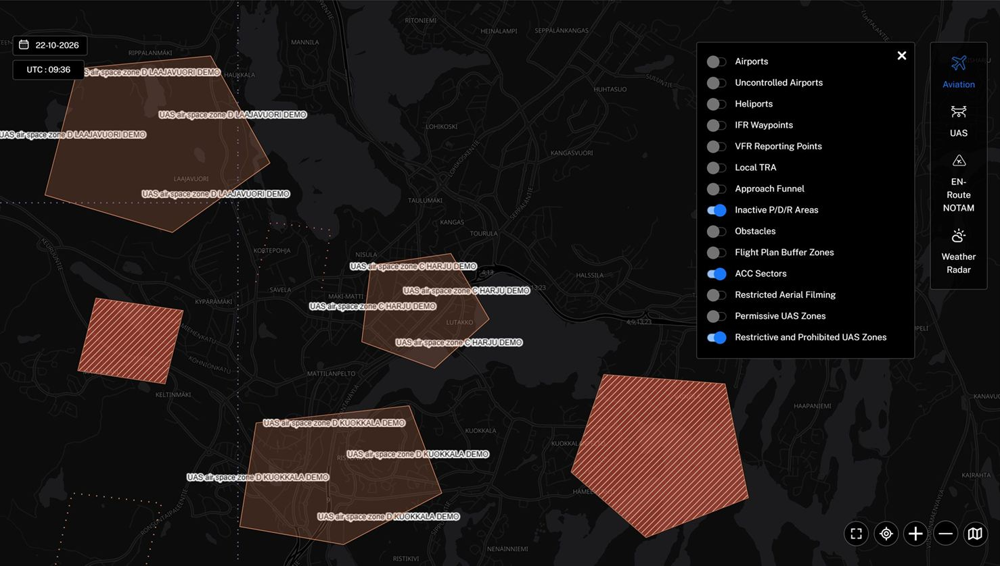
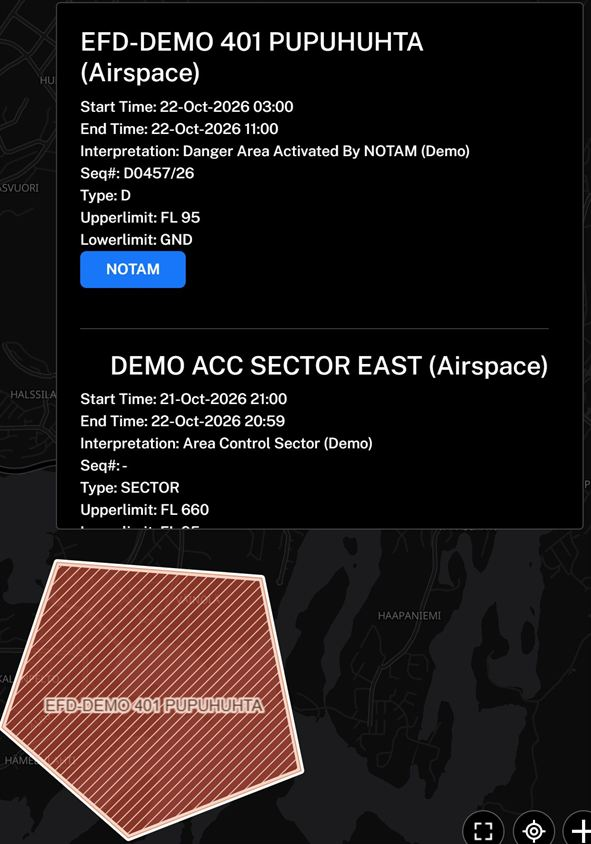

Case 15 · Fintraffic Sky, Finland
Airspace layers on a public map
Fintraffic Sky shows drone pilots in Finland which airspace applies where. I built the map layers that make zone types easy to tell apart.
- Google Maps API
- SVG
- Turf.js
The problem
Overlapping zones of different types looked alike on the map, and their names were hard to place.
My part
- A hatched fill for danger and prohibited areas, using an SVG pattern inside a custom map overlay.
- Dashed sector boundaries from a repeated SVG symbol.
- Zone names placed inside each border by shrinking the polygon with Turf.js, grouped so labels show at the right zoom.
- A toggle for inactive danger and restricted areas, and an information box with times and limits for any point.
Result
Each zone type has its own look on the map, and the hatched layer was later reused in a second product.



